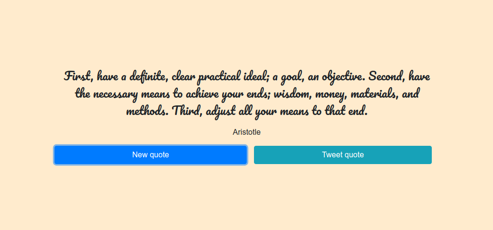
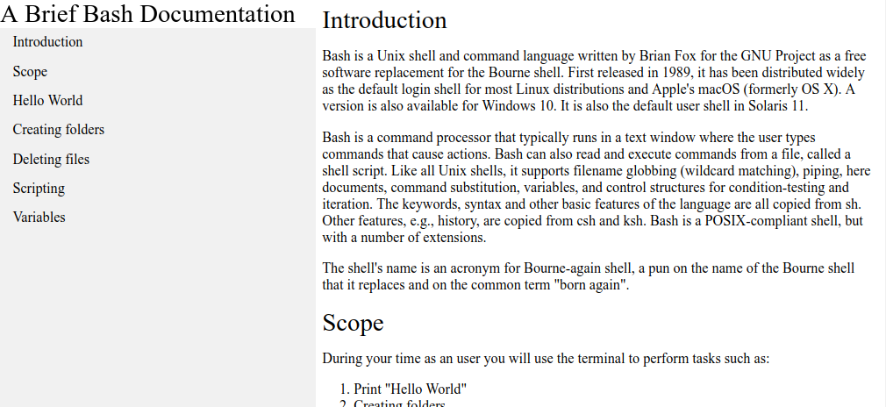
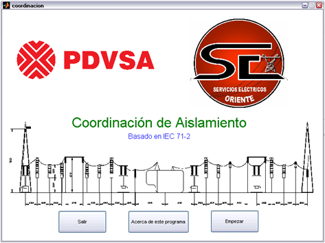

Yoelvis Alfredo Jiménez Rondón
Desenvolvedor web
Apresentação
- Formação em engenharia elétrica
- Conhecimentos em Python
- Conhecimentos em Javascript
- Desenvolvimento de sites estáticos
- Experiência com shell bash
- Experiência com GIT
- Experiente com Linux
- Fluência em português e espanhol. Inglês intermediário
- Alta disponibilidade em aprender tecnologias
Quotes para twitter
Tutorial de bash
Python

Matlab
Contribuções ao repósitório de freeCodeCamp